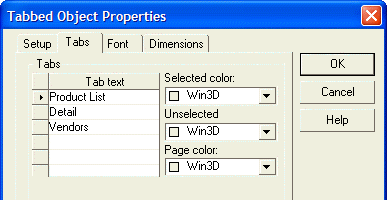

Using a Tabbed Object to Selectively Display Controls
The Tabbed1 object has three tabs and pages, each with its own set of controls. The controls on a page are hidden until the user clicks the corresponding tab.
Procedure: Creating a Tabbed Object to Selectively Display Controls
The following procedure assumes that the developer has opened the form in the Form Editor. Follow these instructions to create a tabbed control similar to Tabbed1 on the Inventory form:
Sketch the tabbed control onto the form.
Right click the tabbed control and select Properties... .
Click the Tabs tab.
Enter the labels for the three tabs into the Tab text list.
Click OK to save your edits.

Click the Product List tab and create its controls.
Click the Detail tab and create its controls.
Click the Vendors tab and create its controls.
See Also